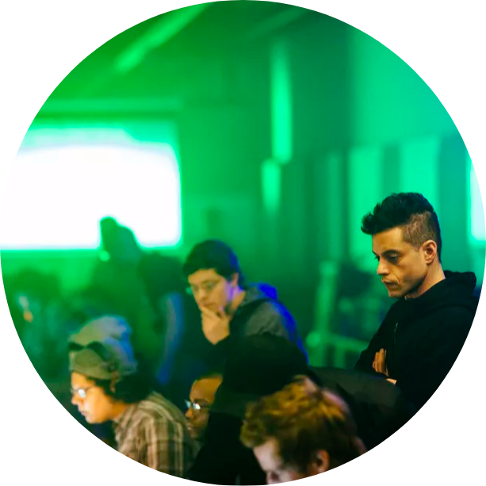

|  |
Tilak Jangid
The user name is samsepi01 and 🖥 is my fr13nd
samsepi01 suffers from social anxiety disorder,
clinical depression, delusions and paranoia. His internal life is revealed via
voice-overs that provide insight into his mental state, his opinions of the people
he encounters and the activity around him. These dialogues with the audience are
designed to help us interpret samsepi01's world, but given his mental illness,
he is an unreliable narrator, leaving us unsure whether what he tells us we're
seeing is actually what is happening. Typical of this is when samsepi01 hears
everyone around him refer to E Corp as Evil Corp, reflecting his own opinion of
the conglomerate |